+++
title = "Cartier Saat Tasarımı"
description=""
url="sayi-14/cartier-saat-tasarimi"
aciklama="Yemek esnasındaki sohbette Santos, arkadaşına uçuş sırasında cep saatini kullanırken yaşadığı zorluktan bahsetti. Zira uçak panelinden ellerini çekmesi, cebinden saatini çıkarıp bakması uğraştırıcı ve tehlikeliydi. Louis Cartier, havacılık tutkunu dostunun neye ihtiyacı olduğunu kafasında canlandırmaya başlamıştı bile. Henüz ismi koyulmamış da olsa o dostane sohbet dünyanın ilk pilot saati olarak da bilinen “Santos-Dumont”un ortaya çıkmasını sağlayacaktı."
type="sayfa"
thumb="/img/cartier-saat-thumbnail.jpg"
date = "2021-09-30"
sayi=["14"]
sayfa="01"
yazar=["zeynep-yarar"]
tags= ["dergi"]
+++

<div class="container">
   <div class="row">
      <div class="col-md-6">
         <h2 class="mt-3" id="gökyüzünde-saat-kaç">Gökyüzünde Saat Kaç?</h2>
         <p>
            1900ler’in başı havacılık tarihi açısından oldukça önemli yıllardı.
            Takvimler 1903’ü gösterdiğinde dünya Amerikalı Wright Kardeşler’in
            başarısını konuşuyordu.
         </p>
         <p>
            Hemen devamında Brezilyalı havacılık tutkunu Alberto Santos Dumont,
            kendi tasarladığı tekerlekli hava aracıyla kalkış yapmayı ve uçmayı
            başardı. Tamamen mono blok tasarladığı kanatlar ve iniş kalkış
            esnasında gücünü tekerlere aktarabilen aracıyla Wright
            Kardeşler&#39;in sansasyonel başarısına ortak oldu.
         </p>
         <p>
            Sorunsuz geçen denemelerinin ardından ödüle layık görülen Santos
            için Paris&#39;te ailesinin ve yakın dostlarının yanısıra sosyetenin
            ünlü simalarını da bir araya getirecek bir kutlama yemeği
            düzenlendi. Geceye katılan davetlilerin arasında Santos’un yakın
            dostu Louis Cartier de vardı.
         </p>
      </div>
      <div class="col-md-6">
         {{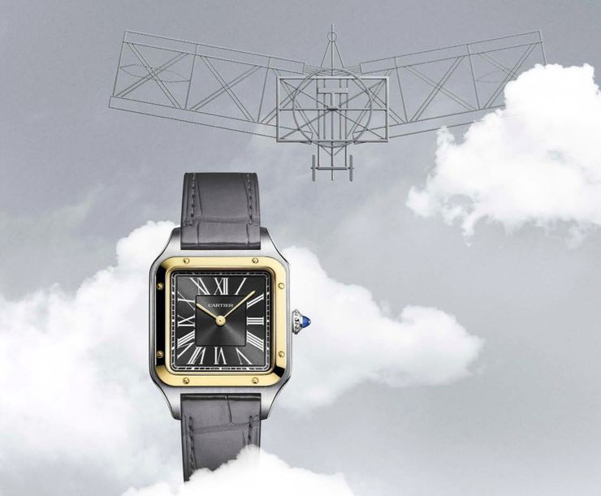}}
      </div>
   </div>
   <div class="row">
      <div class="col-md-6">
         <p>
            Yemek esnasındaki sohbette Santos, arkadaşına uçuş sırasında cep
            saatini kullanırken yaşadığı zorluktan bahsetti. Zira uçak
            panelinden ellerini çekmesi, cebinden saatini çıkarıp bakması
            uğraştırıcı ve tehlikeliydi. Louis Cartier, havacılık tutkunu
            dostunun neye ihtiyacı olduğunu kafasında canlandırmaya başlamıştı
            bile. Henüz ismi koyulmamış da olsa o dostane sohbet dünyanın ilk
            pilot saati olarak da bilinen “Santos-Dumont”un ortaya çıkmasını
            sağlayacaktı.
         </p>

         <h2 id="i̇lk-pilot-saati">İlk Pilot Saati</h2>
         <p>
            Louis Cartier yakın dostu için tasarladığı saati üretti ve
            Santos&#39;a verdi. Sıradaki uçuşlarında büyük bir zevkle saatini
            kullanan Alberto Santos Dumont&#39;un gazetelerde çıkan
            fotoğraflarına bakan halkın Santos&#39;un kolundakini farketmesi
            uzun sürmedi. “O kolundaki şey de ne..?“ sorusunun cevabı basitti:
            “Kol saati“.
         </p>
         {{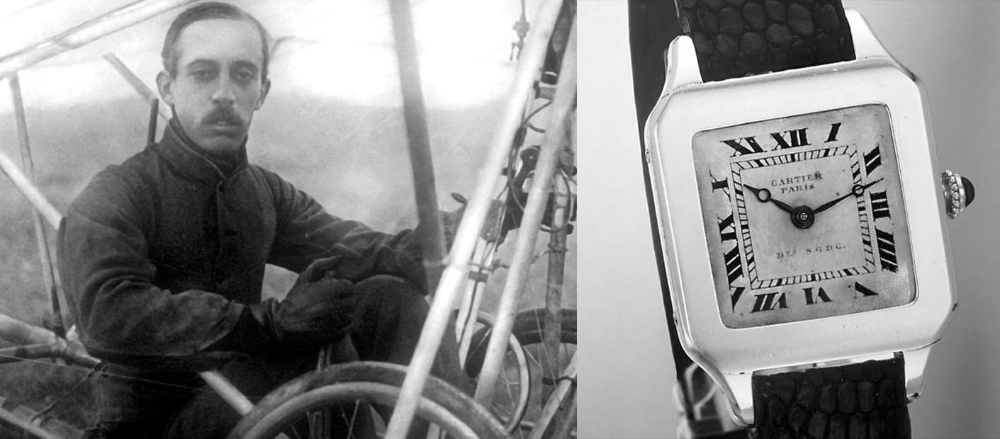}}
      </div>
      <div class="col-md-6">
         {{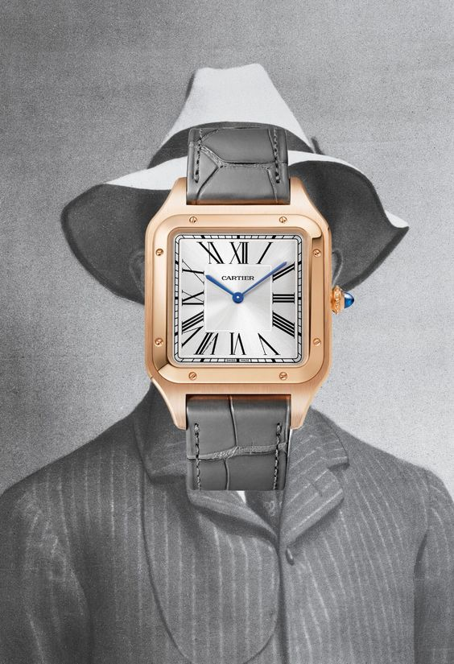}}
      </div>
   </div>
   <div class="row">
      <div class="col-md-6">
         {{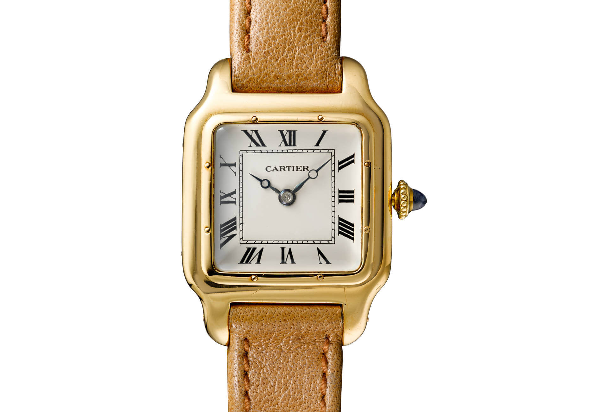}}<br /><small>İlk Cartier Santos Cartier</small>
      </div>
      <div class="col-md-6">
         <p>
            1900&#39;lerin başlarına baktığımızda aslında kol saati yeni bir
            buluş değildi. Zira Patek Philippe benzer tasarıma sahip modelleri
            çoktan üretmişti bile. Ancak üretilen saatlerin hepsi kadın
            saatiydi. Bu sayede
            <em>&#39;Santos Dumont&#39;</em>
            <strong>ilk pilot saati</strong> oluşunun yanında
            <strong>ilk erkek kol saati</strong> ünvanını da aldı.
         </p>
         <p>
            Alberto Santos Dumont tasarladığı uçağıyla, Louis Cartier ise
            girişimci dostu için hazırladığı saatiyle farklı alanlarda tarihin
            seyrini değiştirecek gelişmelere imza attılar.
         </p>
         <p>
            Louis Cartier tecrübeli bir tasarımcı ve başarılı bir
            pazarlamacıydı. Tasarımını yaptığı kol saatini seri üretime
            geçirebilmek için Edmond Jaeger’in -dönemin ünlü saat mekanizması
            üreticisi- kapısını çaldı. Cartier ve Jaeger’in ortak çabasıyla
            birlikte, adını ilk kullanıcısından alan &#39;Santos&#39; saati,
            1911 senesinde resmen satışa sunuldu. [1]
         </p>
      </div>
   </div>

   {{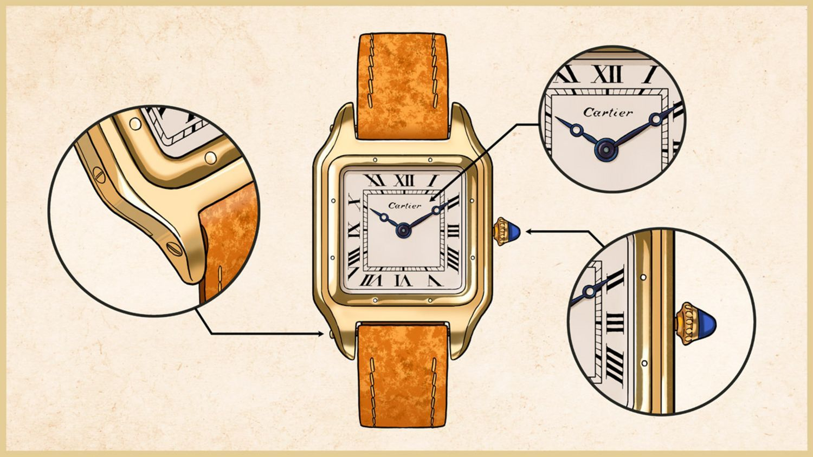}}
   <br /><small>
      Illustration<a
         href="http://blamb.co.uk/portfolio/mr-porter-journal---wearable-tech/"
         target="_blank"
         >: Ben Lamb</a
      >
   </small>

   <h2 id="vidalar-ve-cartier">Vidalar ve Cartier</h2>
   <div class="row">
      <div class="col-md-4">
         <p>Santos, kariyerinde bir dizi evrim geçirecekti.</p>
         <p>
            En önemlilerinden biri 1978&#39;de paslanmaz çelik kordonun
            eklenmesiydi. Genellikle vidaları saklama çabasının aksine vidaları
            gösterme cesareti, Santos Saati için başka bir imza unsuru oldu.
            “Modern” Santos doğdu denebilir.
         </p>
         <p>
            <em
               >Vidalar ise markanın DNA&#39;sına kodlanmış detaylardan birisi
               olarak hala karşımıza çıkmaktadır.</em
            >
         </p>
      </div>
      <div class="col-md-4">
         {{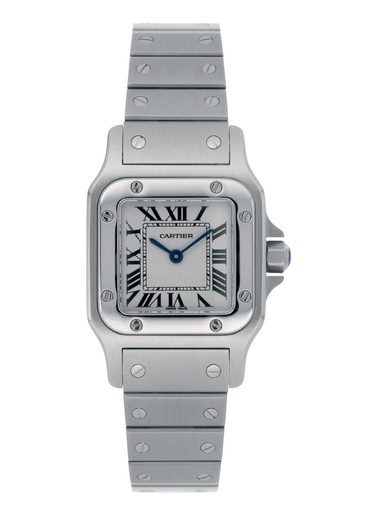}}
      </div>
      <div class="col-md-4">
         {{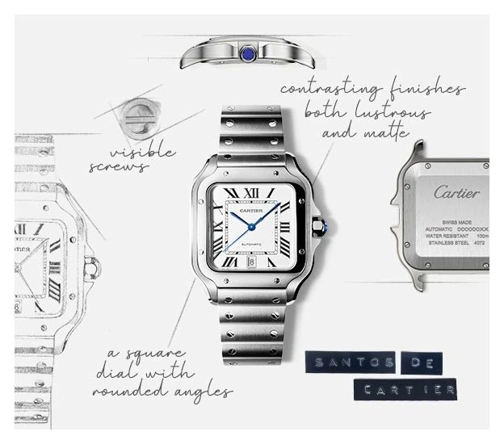}}
      </div>
   </div>

   <div class="row">
      <div class="col-md-4">
         {{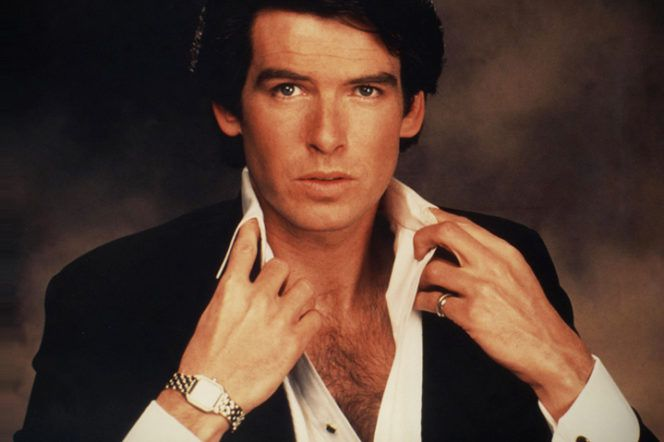}}<br /><small>Pierce Brosnan</small>
      </div>
      <div class="col-md-4">
         <p>
            Cartier gibi &#39;James Bond&#39; da her nesilde yeniden doğuyor.
            80&#39;lerdeki &#39;<em>Noble House&#39;</em> adlı mini dizide Bond
            rolündeki <em>Pierce Brosnan</em> &#39;Cartier&#39; taktı.
         </p>
         <p>
            Daha sonraki yıllarda, bir diğer Bond oyuncusu
            <em>Timothy Dalton</em> ve Hollywood süperstarı
            <em>Tom Cruise</em> da dahil olmak üzere Santos-Dumont serisinden
            saatleri benimseyen diğer önemli isimler görüldü. [2]
         </p>
      </div>
      <div class="col-md-4">
         {{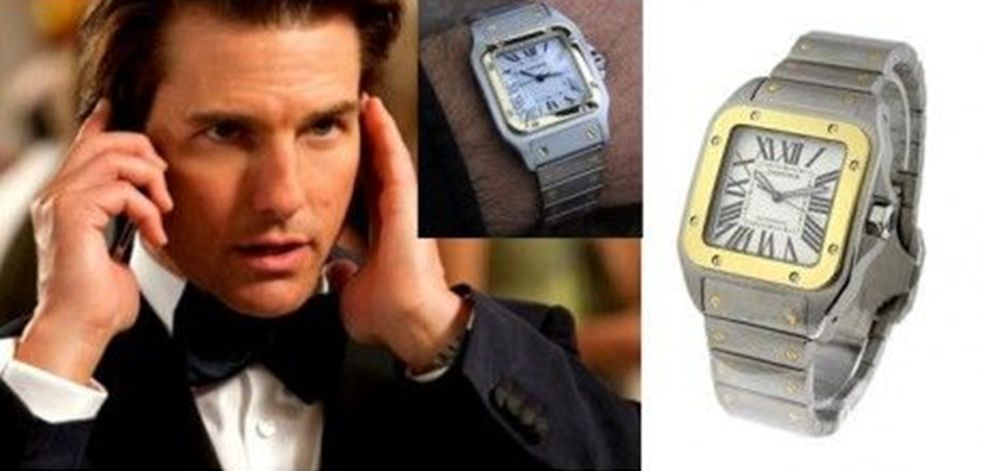}}
         <br /><small>Tom Cruise</small>
      </div>
   </div>

   <div class="row">
      <div class="col-md-4">
         <h2 id="yüzyıllık-i̇konik-saat-tank">Yüzyıllık İkonik Saat: TANK</h2>
         <p>
            Saatçilik dünyasında &#39;bileğe takılmak üzere tasarlanan saat&#39;
            mevzusuyla artık piyasanın arkasındaki güç Louis Cartier&#39;di.
         </p>
         <p>
            1917&#39;de Cartier&#39;in &#39;&#39;Tank Saati&#39;&#39; uzun bir
            tasarım sürecinin doruk noktası olarak güçlü bir vizyonla doğdu.
            Geleneği bir kenara atan, alışkanlıkları sarsan ve modern tasarımı
            atölyelere taşıyan bir saatçilik ikonu olmaya aday bir saatti.
         </p>
         <p>
            Takvimler 1919&#39;u gösterdiğinde üretime geçen efsanevi saatin
            kare tasarımı yüzyılı aşacaktı.
         </p>
      </div>
      <div class="col-md-4">
         {{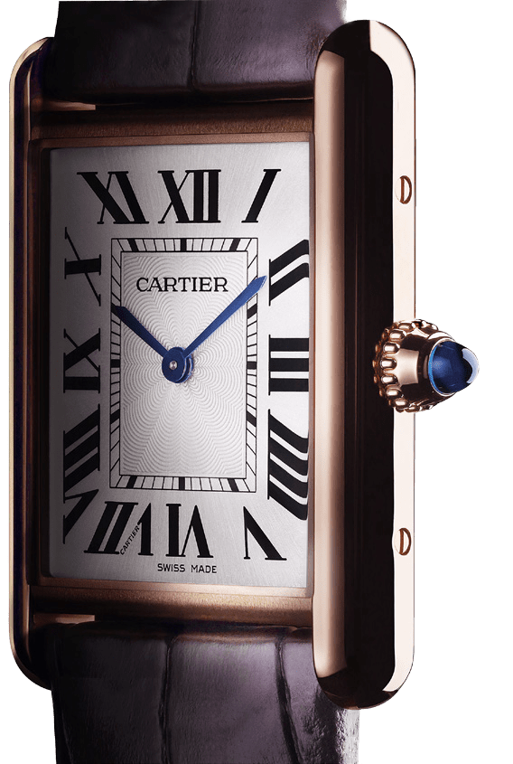}}
      </div>
      <div class="col-md-4">
         {{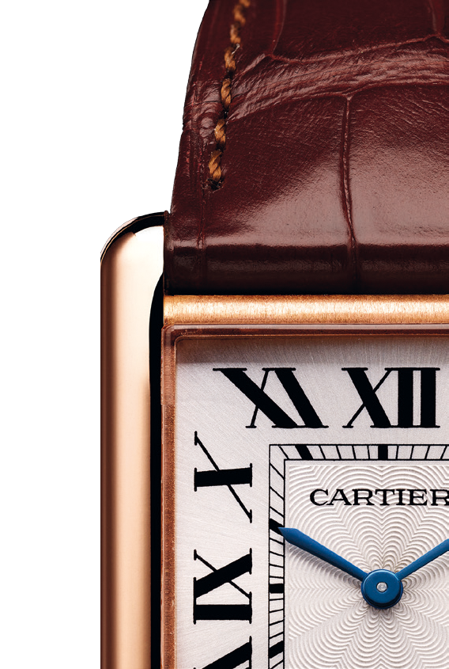}}
      </div>
   </div>

   <div class="row">
      <div class="col-md-6">
         <p>
            İkonik tasarım Tank Saati, geometri ve soyut formlara dayalı Art
            Nouveau&#39;dan yola çıkan ve sonunda Art Deco&#39;nun öncüsü haline
            gelen -Louis Cartier&#39;in estetik vizyonuyla kurduğu markasının-
            saat yapımcılığında modernliğe giriş niteliğindedir. [3]
         </p>
         <h3 id="çemberi̇n-karesi̇ni̇-almak" class="mt-md-3">
            ÇEMBERİN KARESİNİ ALMAK...
         </h3>
         <p>
            Alışılagelmiş çember saatlerin aksine Tank saatinin kare tasarımı,
            bir tankın üstten görünümüne ithafdır. Savaş alanlarında bulunan
            tankların çizgilerini ve orantarını takip ederken saat kasası aracın
            kokpitini temsil etmektedir.
         </p>
      </div>
      <div class="col-md-6">
         {{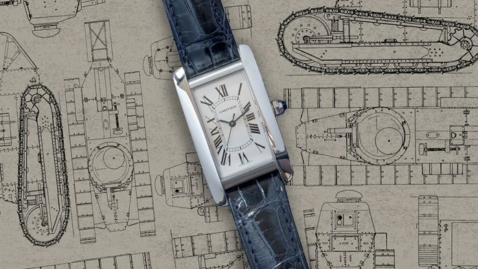}}
      </div>
   </div>

   <h3 id="ünlüler-tankı">Ünlüler Tankı</h3>
   <div class="row">
      <div class="col-md-6">
         {{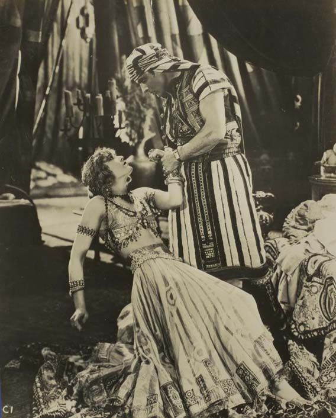}}
         <p>
            George Fitzmaurice&#39;in &#39;The Son of the Sheik&#39; filmindeki
            sinema çekimlerinde Rudolph Valentino, Tank saatini kolundan
            çıkartmak istemedi. Bileğinde en sevdiği saatiyle geleneksel
            Ortadoğu kıyafetleri birbiriyle çelişti. Bu hoş kültürel
            tutarsızlık, bugün filmden alınan karelerde görülebilir. Bu,
            Tank&#39;ın ilk sinema rolüydü.
         </p>
      </div>
      <div class="col-md-6">
         {{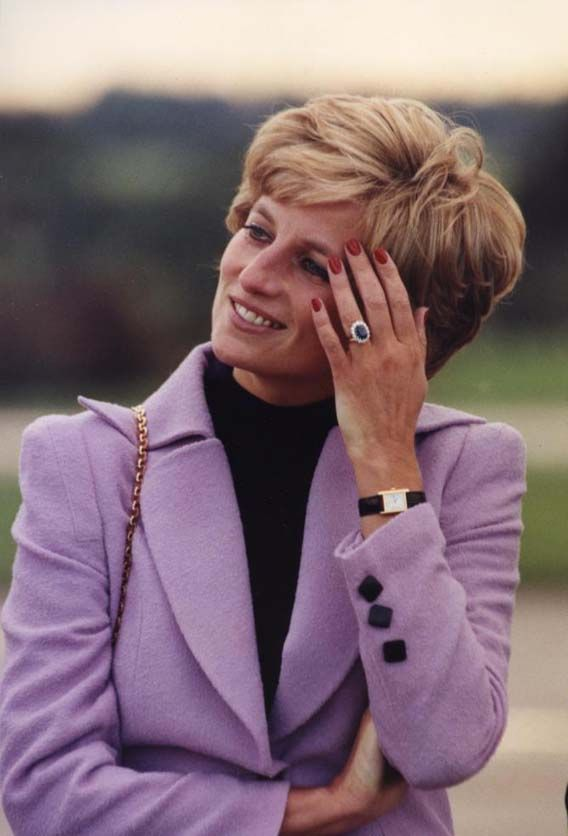}}
         <p>
            Saatin Leydi Diana ile olan ilişkisi, satış stratejisi olarak
            sıklıkla kullanıldı.
         </p>
         <p>
            &#39;&#39;Tank Saat&#39;te satın alırken insanlara heyecan veren
            meşru bir tarih var. Galler Prensesi&#39;nin taktığı saatin aynısını
            takmanız çok hoş bir hikaye.&#39;&#39; [4]
         </p>
      </div>
   </div>

   <div class="row">
      <div class="col-md-6">
         {{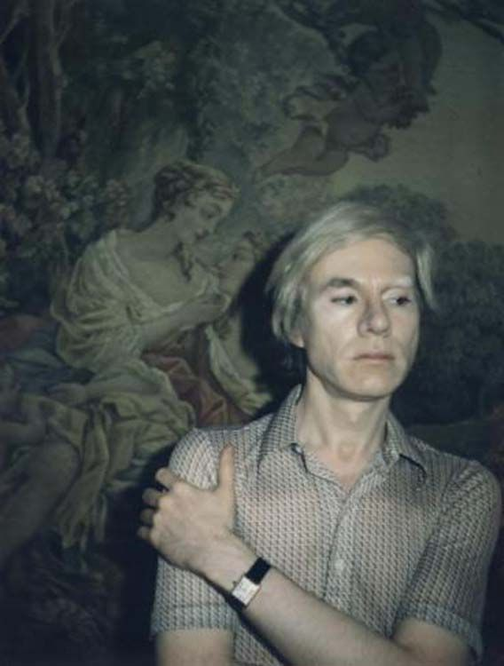}}
         <p>
            Cartier markası işlevini aşan bir parça ortaya çıkartmıştı. Bu
            parçanın temsil ettiği ikonolojiyi tanımlayan sembolik ifadeyi ise
            Pop Art figürü Andy Warhol üstlendi. Tank saatini taktı ama asla
            kurmadı. Bir röportaj sırasında itiraf etti.
         </p>
         <blockquote>
            <p>“Gerçekten saati söylemek için takmıyorum…”</p>
         </blockquote>
      </div>
      <div class="col-md-6">
         {{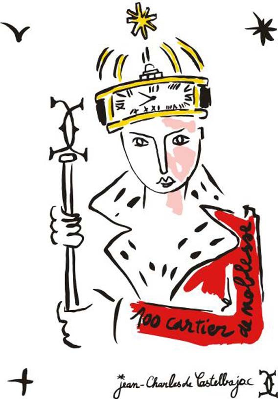}}
         <p>
            Fransız tasarımcı Jean-Charles de Castelbajac, Fransız haftalık
            Madame Figaro Dergisi&#39;nde Tank saatine siyasi ama şiirsel bir
            övgüde bulundu:
         </p>
         <blockquote>
            <p>
               &quot;Tüm Tanklar Cartier tarafından yapılmış olsaydı, barış
               içinde yaşamak için zamanımız olurdu!&quot;
            </p>
         </blockquote>
      </div>
   </div>

   <div class="row">
      <div class="col-md-6">
         {{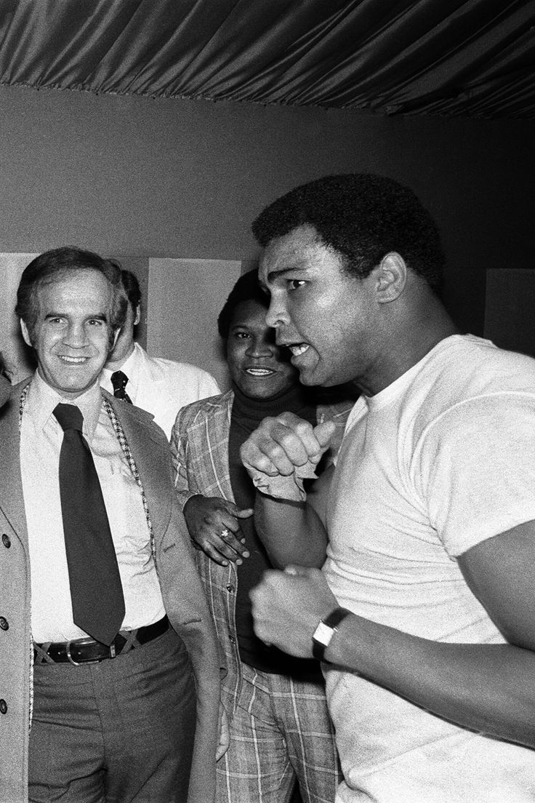}}
         <p>
            Kelebek gibi uçan &#39;Dünya Ağır Sıklet Boks Şampiyonu&#39;
            Muhammed Ali&#39;yi de bir Tank takarken görmekteyiz.
         </p>
         <p>
            Saatin en parlak dönemlerinde Muhammed Ali kadar güçlü ve iri
            insanlar ondaki zarafeti gördüler ve bir tanesine sahip olmak
            istediler. [4]
         </p>
      </div>
      <div class="col-md-6">
         {{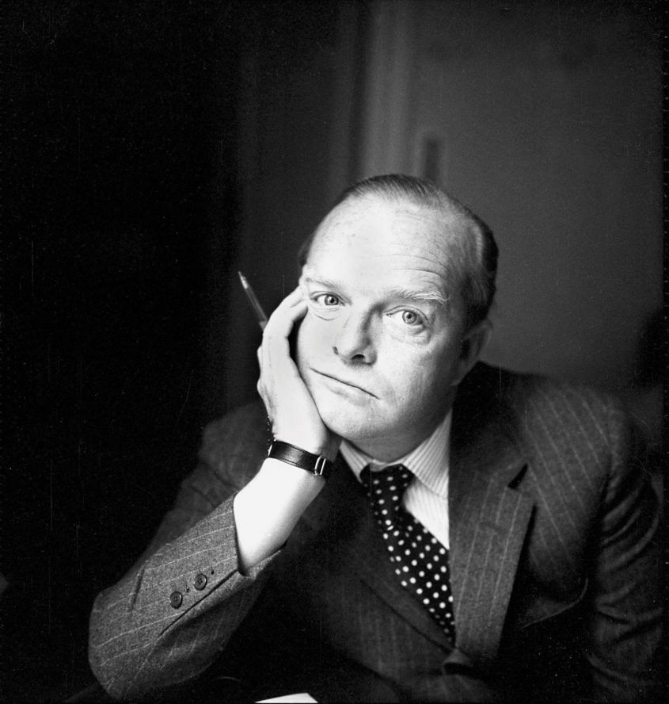}}
         <p>
            Hevesli bir Tank koleksiyoncusu olan yazar Truman Capote,
            1972&#39;deki bir röportajını yarıda kesti. Muhabirin taktığı saate
            dayanamadı. &quot;Bileğindeki o çirkin saati çıkar ve bunu
            tak.&#39;&#39; diyerek Tank&#39;ının kordonunu çözüp takdim etti.
         </p>
         <blockquote>
            <p>&quot;Yalvarırım, sakla. Evde en az yedi tane var.”</p>
         </blockquote>
      </div>
   </div>

   <div class="row">
      <div class="col-md-6">
         {{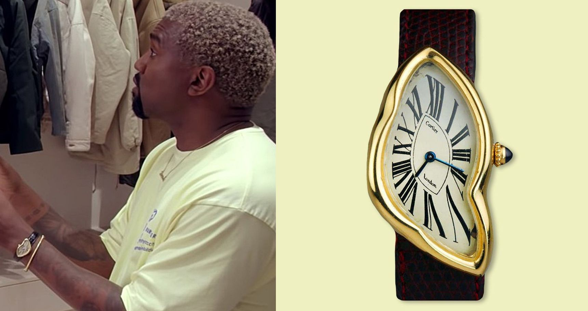}}
      </div>
      <div class="col-md-6">
         <p>
            Bir gün Louis Cartier işe giderken Londra otobüsü ile taksinin
            arasında bir araba kazası gördü ve her iki araç da tamamen
            parçalanmıştı. Atölyesine girdi ve ekibine sordu:
         </p>
         <blockquote>
            <p>
               &#39;Tank saatlerimizden biri, bir araba kazasında olsaydı nasıl
               görünürdü?&#39;
            </p>
         </blockquote>
         <p>
            60&#39;larda bu <em>görece ezilmiş</em> saatten sadece 12 tane
            yapıldı. Ancak <em>E-type Jagua</em>r, <em>Mini Cooper</em> ve
            <em>Beatles</em> ile aynı şekilde ve aynı zamanda Londra&#39;nın
            simgesi haline geldi.
         </p>
         <p>
            Ünlü rapçi Kanye West&#39;in de bu saati taktığını görünce şaşırmaya
            gerek yok. Her zaman ünlü insanlar tarafından takılmış Tank
            Saatlerden Kanye&#39;nin de bir tane takması sadece kozmik bir anlam
            ifade ediyor.
         </p>
      </div>
   </div>

   {{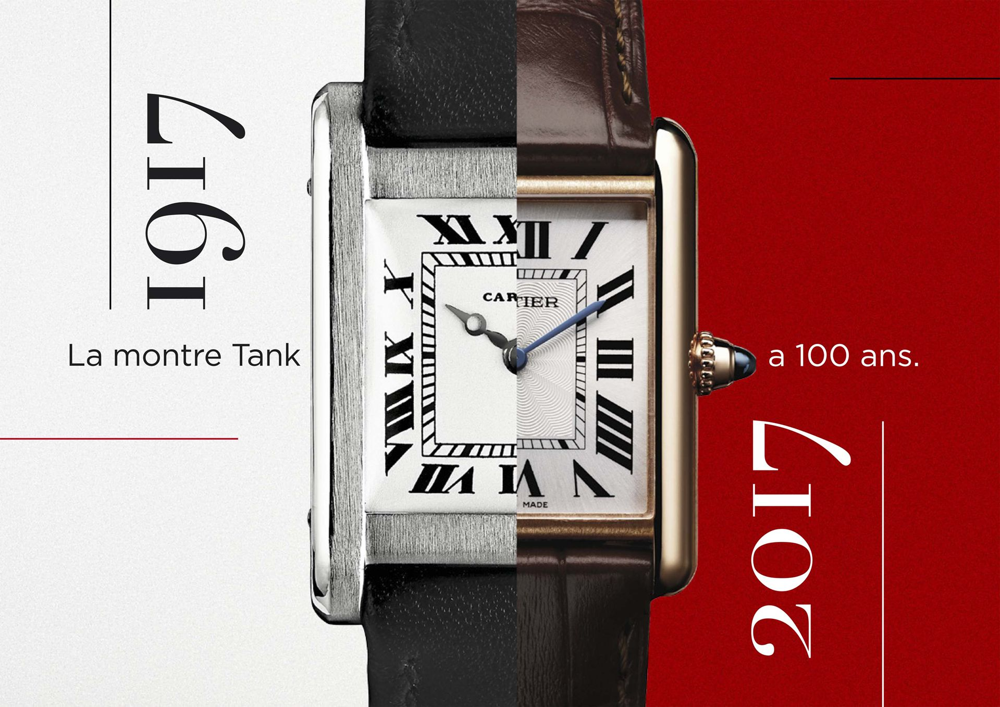}}

   <h2 id="son-tank">Son Tank</h2>
   <div class="bg-grey p-md-5 p-2">
      <p>
         Louis Cartier&#39;in pratik, sade tasarımı tüm zamanların en başarılı
         ve kalıcı saatlerinden biri haline gelmekle kalmadı, bütünlüğünü
         kaybetmeden birçok yeni varyasyonu kabul etti.
      </p>
      <p>
         Her varyasyonun son derece doğru oluşu ve yüzyılı aşkındır devam
         etmesi; Louis Cartier&#39;in Tank&#39;ının sadece
         <strong><em>zamanı gösteren</em></strong> bir tasarım değil,
         <strong><em>zamanı aşan</em></strong> bir tasarım olduğunun kanıtıdır.
         Bugün hala soru hazırdır:
      </p>
      <p>
         <strong
            >Bir Tank, bir Tanktan daha iyi olabilir mi? Bir simge kendini
            aşabilir mi?</strong
         >
         <em>Hikaye henüz bitmedi...</em>
      </p>
   </div>
   
   <br /><br /><br />
   <button
      class="btn markutbtn"
      data-target="#my-collapse"
      data-toggle="collapse"
      aria-expanded="false"
      aria-controls="my-collapse"
   >
      Kaynaklar
   </button>
   <div id="my-collapse" class="collapse">
      <pre> <br><small><code>  
    [1] https://www.horobox.com/haber-detay/cartier-santos-hikayesi

    [2] https://www.thegentlemansjournal.com/article/iconic-cartier-watches-ever-made-wears/
    
    [3] https://360rawmagazine.wordpress.com/2020/07/02/cartier-tank-the-socialite-watch-is-the-most-iconic-watch-of-the-cartier-house/
    
    [4] https://www.gq-magazine.co.uk/watches/article/cartier-tank-history
    
    http://blamb.co.uk/portfolio/mr-porter-journal---wearable-tech/
    
    https://www.mrporter.com/en-tr/journal/lifestyle/wearable-tech-the-first-8000-years-766550
    
    https://www.cartier.com/en-us/collections/watches/all-watches/santos-de-cartier-watches/santos-de-cartier.html
    
    https://www.lhommetendance.fr/montre-cartier-santos-pasha/
    
    http://www.lacotedesmontres.com/en/The-Tank-watch-turns-100-years-old-Tank-is-a-Tank-is-a-Tank-No_11700.htm
    
    https://www.yahoo.com/lifestyle/muhammad-ali-kanye-west-steve-184422900.html?guccounter=1
    
    https://www.thegentlemansjournal.com/article/pick-iconic-cartier-watch-worn-icons/
    
    https://timeandtidewatches.com/everything-need-know-cartier-tank/
    
    https://www.nytimes.com/2017/09/19/fashion/watches-cartier-tank.html
    
    https://www.hodinkee.com/articles/from-war-time-to-watch-time-the-tank-behind-the-cartier-tank
    
    https://habituallychic.luxury/2016/01/timeless-chic-the-cartier-tank-watch/
    
    https://www.cartier.com/en-us/collections/watches/mens-watches/tank.html
     </code></small></pre>
   </div>
</div>
